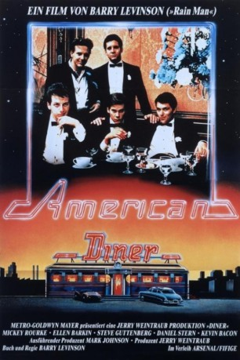

#7466 American Diner
Alternativ: Diner
Auszeichnungen: für 1 Oscars nominiert
 
 IMDB-Wertung: 7.2 / 10
IMDB-Wertung: 7.2 / 10  Metascore: 0
Metascore: 0 
Baltimore gegen Ende der 50er Jahre: Eine Handvoll Jugendliche trifft sich regelmässig in einem Fastfood-Restaurant. Hier schwelgen sie im Träumen und starten von dort aus ihre Unternehmungen. Es ist für alle eine seltsame Zeit, die ihnen allmählich vor Augen führt, daß sie an der Schwelle des Erwachsenendaseins angelangt sind. Mit Melancholie und Nachdenklich keit lassen sie ihre jungen Jahre Revue passieren mit dem Wissen, dass diese niemals wiederkehren werden.
Jahr: 1982
Dauer: 109 Minuten
FSK: 12
Land: USA Studio: MGMTonspuren:
Untertitel:
Auflösung: 1080p (1920x1080) Größe: 8130 MB
Genre: Drama, Komödie
Regisseur:  Barry Levinson
Barry Levinson
Drehbuch: Barry Levinson
Soundtrack:
Darsteller:
 Steve Guttenberg als Edward 'Eddie' Simmons
Steve Guttenberg als Edward 'Eddie' Simmons Daniel Stern als Laurence 'Shrevie' Schreiber
Daniel Stern als Laurence 'Shrevie' Schreiber Mickey Rourke als Robert 'Boogie' Sheftell
Mickey Rourke als Robert 'Boogie' Sheftell Kevin Bacon als Timothy Fenwick Jr.
Kevin Bacon als Timothy Fenwick Jr. Tim Daly als William 'Billy' Howard
Tim Daly als William 'Billy' Howard Ellen Barkin als Beth Schreiber
Ellen Barkin als Beth Schreiber Paul Reiser als Modell
Paul Reiser als Modell- Michael Tucker als Bagel
 Tom Tammi als Howard Fenwick
Tom Tammi als Howard Fenwick- Todd Stockman als (uncredited
- Kathryn Dowling als Barbara
- Jessica James als Mrs. Simmons
- Colette Blonigan als Carol Heathrow
- Kelle Kipp als Diane
- John Aquino als Tank
- Richard Pierson als David Frazer
- Claudia Cron als Jane Chisholm
- Tait Ruppert als Methan
- Pam Gail als First Stripper
- Lauren Zaganas als Second Stripper
- Sharon Ziman als Bride, Elyse
- Mark Margolis als Earl Mager
- Ralph Tabakin als TV Customer
- Frank Stoegerer als TV Director
- Nat Benchley als Technical Director
- Frank Hennessy als Audio Man
- Marvin Hunter als Newscaster
- Steve Smith als Announcer
- Lee Case als Mr. Howard - Billy's Father
- Clement Fowler als Mr. Simmons - Eddie's Father
- Howard Silverman als Clothing Hustler
- Ted Bafaloukos als George
- Barney Cohen als Knocko
- Bruce Kluger als Guy at Pool Hall
- Bruce Elliott als Soap Opera Man
- Carole Copeland als Soap Opera Woman
- Aryeh Cooperstock als Rabbi
- Brian Costantini als Drunk at Wedding
- Lorraine D. Glick als Woman at Wedding
- Florence Moody als Waitress
- Mary Lou Vukov als Waitress
- Alan Kaplan als Bagel's Friend
- Donald Saiontz als Bagel's Friend
- Chief Gordon als Man in Jail
- Beverly Sheehan als Beautician
- Dusty Clare als Salon Woman
- Nicole Marshall als Wallflower in Opening Dance Scene , uncredited
Datei: X:\1982\American Diner (1982, FSK12, 1920x1080).mkv seit 14.11.2017
Festplatte: HD 1980-1986
 Es gibt insgesamt 31 Filme in der Gruppe '1982'
Es gibt insgesamt 31 Filme in der Gruppe '1982'